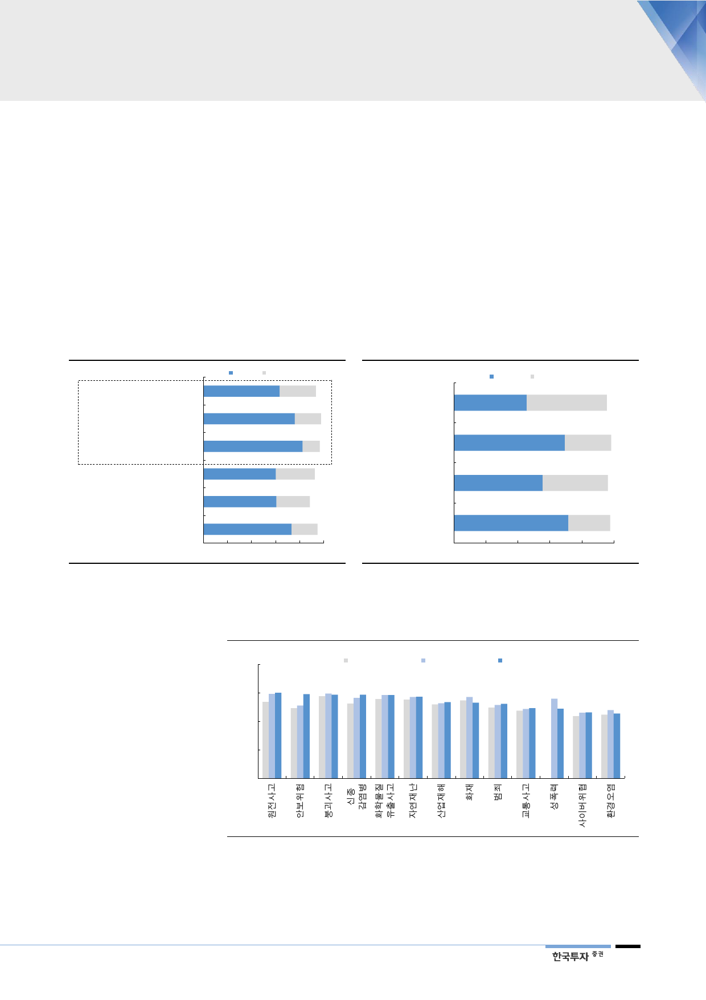

탈원전 속도에 대한
고민이 필요한 시점
을 수 있지만, 설문조사 결과를 살펴보면 오히려 안전성과 사후처리비용 등 원전
의 단점을 인정하는 응답자가 더 많았다. 그럼에도 현재로서는 경제적이고 친환
경적인 원전의 장점이 더 크고 이를 대체할만한 에너지 대안이 없기 때문에 원자
력발전 유지에 무게가 기우는 것이다.
탈원전과 탈석탄이라는 장기적 목표를 달성하기 위해서는 향후 물가안정과 신재
생에너지 투자에서 중요한 역할을 수행할 한전의 이익을 지난 1년처럼 후순위에
두기 어려울 것이다. 행정안전부가 실시한 ‘국민 안전 체감도 조사’에 따르면 13
개의 사회적 재난 항목 중 원전 사고의 가능성을 가장 낮게 보는 것으로 나타났
다. 지난 1년간 안보분야 다음으로 안전체감도가 가장 많이 개선된 것이다. 반대
로 이제는 안전 이외의 가치에도 신경 쓸 여력이 생겼다.
[그림 30] 안전과 사후처리비용 등 단점 인정하지만
안전관련 비용 감안하면 더
비싸질 수 있다
위험한 중대사고를 초래할 수
있다
방사성폐기물의 안전한 관리가
까다롭다
동의
63.4
부정
30.0
75.9
21.8
82.4
14.1
에너지 안보에 유리하다
60.3
32.1
미세먼지와 온실가스를 거의
배출 안한다
60.7
27.6
전기료를 낮추는데 도움이 된다
0
73.2
20 40 60
21.5
(%)
80 100
주: 한국리서치가 2018년 8월 6~7일 만19세 이상 1,000명을 대상으로 실시한
‘원자력발전에 대한 인식조사’의 결과
자료: 한국원자력학회, 한국투자증권
[그림 31] 원자력발전 이용에 대해 대체로 찬성
긍정적 부정적
정부의 에너지 정책
45.5
50.1
향후 확대/유지 여부
69.3
28.9
안전성 여부
55.5
40.7
이용에 대한 찬반
0
71.6
26.0
(%)
20
40
60
80 100
주: 향후 원자력발전 비중에 대해서 ‘늘려야 한다’ 37.7%, ‘유지해야 한다’ 31.6%,
‘줄여야 한다’ 28.9%로 응답
자료: 한국원자력학회, 한국투자증권
[그림 32] 원전에 대한 사회 안전 체감도가 가장 높게 나타남
(5점 만점)
4
2017년 상반기 2017년 하반기 2018년 상반기
3
2
1
0
주: 글로벌리서치가 2018년 상반기 13세 이상 일반국민 10,000명(1월 2,000명, 4월 4,000명, 6월 4,000명)과 전문가 400명을
대상으로 실시한 ‘국민안전 체감도 조사’의 결과. 재난안전 13개 분야에 대해 조사했으며 점수가 높을수록 안전하다고 체감한 것
자료: 행정안전부, 한국투자증권
15